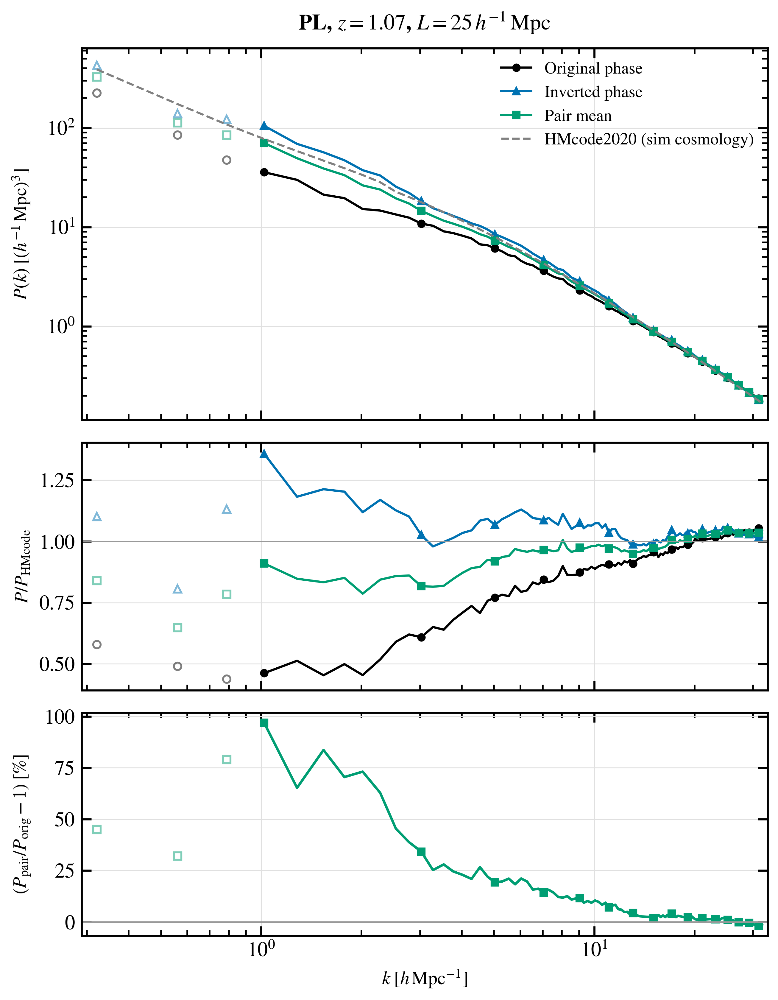
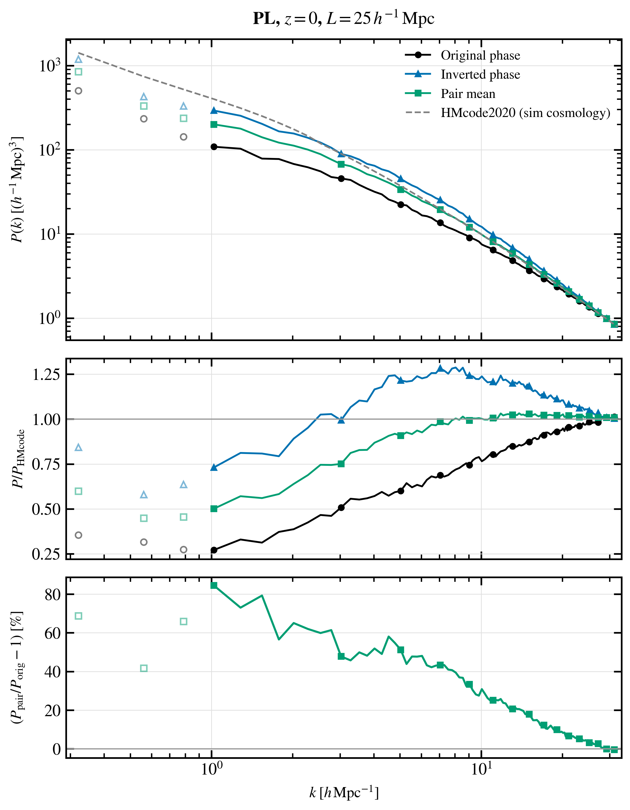
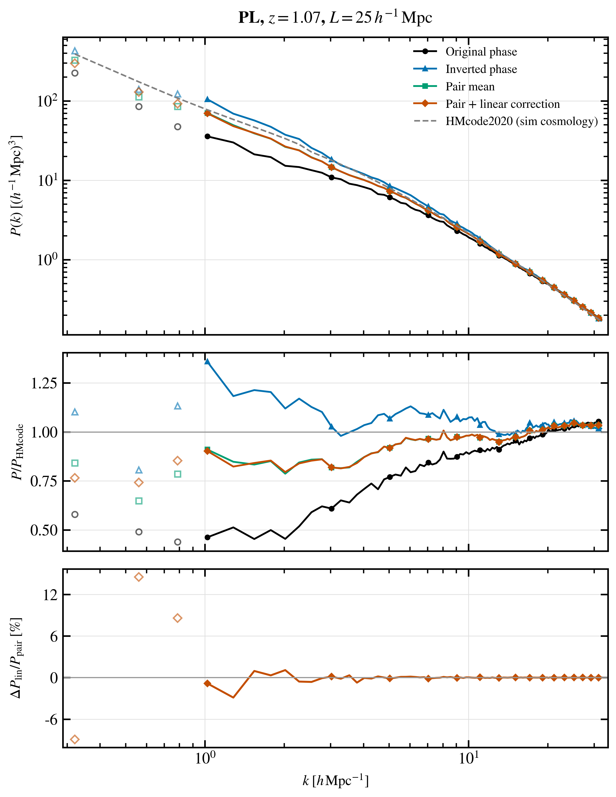
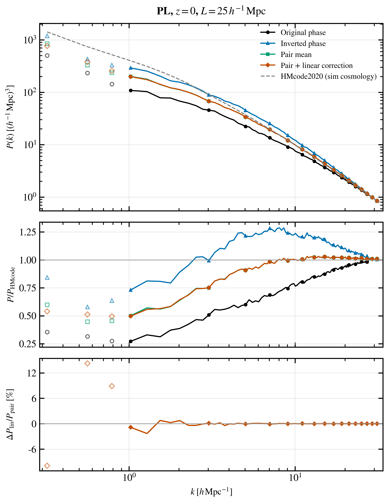

PL 反相功率谱检查
PL phase-pair power spectra
这是独立于论文主图的诊断结果，比较 25 h−1 Mpc、1024³ 粒子 PL 模拟的原相位与反相位功率谱。结果包含 z=0 和 z≈1.07；尚未替换论文图表或主页面的统计数据。
下方图片及 PNG/PDF 下载可直接公开访问，无需打开外部查看页。外部查看页仍为私有访问；本页不提供原始模拟快照下载。
1. z≈1.07：反相平均后与参考谱更接近


2. z=0：平均后仍有明显的低 k 差异


3. 初始线性实现修正：没有消除剩余差异
橙色曲线在绿色平均功率上加 ΔPlin=G²[Plin,theory(zi)−Plin,box(zi)]。这里 G 是从初始时刻到目标时刻的线性增长响应；修正针对初始线性实现差异，不是从模拟中减去非线性耦合。




曲线与计算口径
- 黑色：原相位；蓝色：反相位；绿色：两份功率谱的算术平均，不是先平均密度场。
- 橙色：按 Pontzen et al. 的 Eq. (16) 加入初始线性谱实现差异的诊断修正；灰色：HMcode2020 暗物质参考谱。不同视图显示其中的对应曲线。
- 两种相位采用同一种 1024³ NGP 网格估计器，每份非线性功率谱减去一次 V/N；未做 NGP 窗函数反卷积、折叠或混叠修正。
- 展示范围为 kf≤k≤0.25kNy，kf=2π/L≈0.251327 h Mpc−1；k<4kf 的点以浅色空心标记显示。
- z≈1.07 图以反相快照的实际 z=1.0700000000000003 为目标，对原模拟 0048、0049 的功率谱作时间插值。原 0048 的实际红移为 1.0717968600643704。z=0 两份快照为同一时刻。
理论参考与限制
当前参考采用 Ωm=0.3153、Ωb=0.0493、ΩΛ=0.6847、h=0.6736、ns=0.9649、σ8=0.8111，线性输入为 Eisenstein–Hu，非线性模型为 HMcode2020 DMO。对应已核查结果作业为 2165281。后来测试的 σ8≈0.83549 版本未采用。
反相平均可抵消部分相位相关偏差，但两份模拟不是独立实现，不能直接声称误差缩小 √2。反相平均和 Eq. (16) 都不能恢复盒子缺失的长波模式，也不能保证消除全部非线性有限体积偏差。z=0 的低 k 差异仍存在，不能仅凭这些曲线确定原因。
方法来源：Pontzen et al., arXiv:1511.04090。
English Summary
The four figures show phase averaging at z≈1.07 and z=0, followed by the corresponding Eq. (16) linear-realization diagnostics. In the pair-only figures the bottom panel is the change relative to the original phase; in the correction figures it is the additional correction relative to the pair mean. Neither is an error bar. Phase averaging moves the original result closer to HMcode but leaves a substantial low-k deficit at z=0. Eq. (16) makes only a small change near k≈1 h Mpc−1 and does not establish the cause of the residual mismatch. The reference remains HMcode2020 DMO with σ8=0.8111 and the simulation background parameters. The PNG/PDF files on this page are public. The external viewer remains private. These diagnostics have not replaced manuscript figures or main explorer data.
记录日期 / Recorded: 2026-10-07